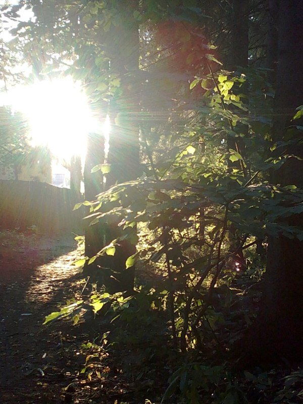

3 Принятие в семью
Последние годы я просыпалась среди ночи и слышала слова на пробуждении: "тебе надо выполнить задачу". Мне казалось, что время течёт сквозь пальцы, как песок и я чувствовала острую боль в душе. Надо выполнить задачу... или всё напрасно!
Несколько дней ничего не происходило. Может, мне почудилась инициация?
Я ощутила, как разочарование вновь подкрадывается к мне. Тогда мне на ум пришли слова: "Наступит момент, когда тебе захочется разочароваться и все бросить. Это будет последний миг перед победой".
В очередной раз прогуливаясь по лесу, я вспоминала, как все эти улавливала обрывки чужих фраз. Мой папа, когда однажды заглянул на дачу, сочинил о нашем лесе стишок:
Лес до самых до небес
В нем живёт зелёный бес
Он живёт с людьми и без
И богатый словно Крез
Сотворил он сто чудес
Но скучает бедный бес
Потому что старый лес
Съел прожерливый прогресс Я сказала мысленно:
- А знаете что... Даже если вы не станете проводить трансформацию, я все равно люблю вас... Всё равно буду приходить к вам... У меня нет никого, кроме вас, кому я могу все честно рассказать. Вы для меня словно друзья детства. Мы много лет вместе. Уж не знаю, каких вампиров Эдик здесь нашел, но я чувствую ваше тепло. Вы настоящие.
И я мысленно обняла невидимое существо.
Секунда.. другая, третья. И вдруг теплая волна вернулась ко мне. Существо тоже меня обняло.
По веткам прошелестел лёгкий ветерок.
Я ощутила, что не одна в лесу. Словно множество мягких лапок легли мне на плечи и я ощутила такую волну тепла, любви и признания, которую не чувствовала никогда. Затем в моём сознании возник отчётливый голос:
- ТЫ НАША.
Это был удивительный, невероятно трогательный момент. Слезы потекли по щекам. Слезы радости.
Меня приняли! Всё получится!
Вечером я с трудом добралась до Фазенды и сделала Клавдии укол.
Сижу в кресле-качалке, чувствую слабость и головокружение, иногда наступает сумеречное состояние. Пью двойную порцию кофе.
Эдик устроился рядом со мной. Когда я ему рассказала о сегодняшнем событии, он прокомментировал:
- Вот наглая девчонка! Как они тебя терпят? Ты же обняла за шею хищника. Ему ничего не стоило убить тебя. Потом бы врачи гадали, откуда у тебя взялось нервное истощение или почему остановилось сердце. И хищник мало того, что не прогнал тебя, так ещё стерпел и ответил.
- Думаешь, ему было неприятно?
- Нет..., - задумчиво ответил Эдик.
Роберт опять о чём-то бубнил сонным голосом, Гарик наливал ему стакан да стаканом.
- Такс.. похоже, они и впрямь решили за тебя взяться, - задумчиво произнес Эдик, - Мягкие лапки… видела бы ты их, красавчиков этих.
- Ты думаешь, они точно согласились? - спросила я с надеждой
- Да меня с самого начала удивило их теплое отношение к тебе. Может, потому, что они знали тебя ребенком и ты для них до сих пор ребенок? Детей они не трогают. Либо учуяли родную кровь. Кто знает, может ты им родственница? У нас здесь на земле такая мешанина...
- Ну так согласились?
- Похоже, что согласились. Я слышал, что у них есть обряд принятия в семью.
- Я одного не понимаю... отчего мне так плохо?
- Ты просто не осознала, что тебя превращают в другое существо! И тебе необходимо есть мясо. Особенно сейчас. Так ты сможешь себя сдерживать.
- Сдерживать от чего? - я удивилась.
- Ты не понимаешь всей серьезности происходящего с тобой. Ты действительно можешь кого-то укусить. А если это случится, ты станешь неуправляемой, я первый возьму дробовик и пристрелю тебя. И да, пули будут серебряными. Хотя, для тебя вполне сошли бы и обычные, но серебра мне на тебя не жаль. Ха! А ты серьезно решила, что становишься бессмертной?
Я снова рассмеялась.
- Но я не собираюсь никого кусать. Я современный человек. Это же нонсенс!
- Ты можешь потерять над собой контроль. И не надо уверять, что с тобой такое никогда не случится. Так что слушай, что тебе говорят: запасись мясом, можно с кровью и кушай по кусочку.
- Хорошо, - отвечаю, хотя про себя была полностью уверена, что делать этого я точно не буду, - и всё же, почему от их превращения мне так плохо?
- Это ещё цветочки! - усмехнулся в Эдик, - дальше будет веселее. А я тебя предупреждал.
- Что со мной происходит?
- Всё закономерно. Они уже начали работу. Но делают это понемногу. Кусают, пьют кровь, проводят другие манипуляции, о которых мне неизвестно и они меня в это не спешат посвящать, уж прости. Деточка, это инициация. Ты сама напросилась.
- Главная загвоздка в том, что я их совсем не понимаю!
- Подожди, - сказал Эдик, - потом ты будешь понимать их лучше. У них сложный витиеватый язык. В принципе, когда они хотят, чтобы ты их поняла, они говорят с тобой четко, на человеческом языке или посылают образы. У тебя образное мышление, ты вполне хорошо их понимаешь.
- Но я почти ничего не понимаю! - с горечью воскликнула я
- Это тебе так кажется. Чем больше ты будешь над этим заморачиваться, тем сложнее тебе будет их понимать. Просто слушай. Вслушивайся. И вообще... хватит меня втягивать в ваши вурдалакские дела - решайте свои вопросы сами.
- Поняла, больше о них тебя пока спрашивать не буду.
- Аллилуйя!
- Слушай, а можно я моему приятелю, кандидату наук по физике Мите про них расскажу? Может, он приедет и замеряет что-нибудь тут каким-нибудь приборчиком? Вдруг удастся уловить какое-то излучение?
- Ты с ума сошла! - воскликнул Эдик, - Никогда! Никому! Ничего! Не говори. Пытать будут - молчи. Иначе дурдом тебе обеспечен. И это если ещё хорошо отделаешься. А еще хуже - придут люди в форме и будут изучать! Секрет надо хранить, иначе вурдалаки тоже получат по шапке. А если они получат по шапке, начнётся зачистка. Незавидная участь ждёт тебя и тех, кому ты расскажешь.
Вот это да! Кто бы мог подумать... А поговорить с кем-то очень хотелось… но нельзя.
- А можно я опишу это у себя в личном блоге и никому не буду показывать? Там нет посетителей.
- Найдут!
- Если спросят - скажу, что выдумываю альтернативную реальность. Книгу пишу или сценарий, как Роберт.
- Хорошо, пиши. Только не пали контору - не засвечивай важные детали, имена участников, места, явки.
- А что они - вампиры - можно писать?
- Можно. Это на уровне белого шума. Вампиры, вурдалаки, упырята - это их давние названия, их можно упомянуть. Главное никогда не упоминай их настоящее название!
Если бы я его знала!
- А про заброшенную военную базу в лесу?
- Да на здоровье! Это уже давно не секрет - сколько к нам сюда горе-сталкеров, охотников за арматурой, притащилось - пусть едут ещё! Хоть кто-то мусор в лесу убирает...
Что ж, имена и явки зашифрую, а главное сохраню в нетронутом виде. Если, конечно, смогу выделить главное. Общение с чужим разумом опишу честно, словно веду лабораторный журнал.
В этот момент Гарик подошёл к нам и начал очередной разговор о своих ненормальных экспериментах. Гарик, он же в миру - Игорь Смышляев, почётный кандидат лженаук и изобретатель нано-фигайдеров в псевдоинституте имени распиаренного квазиученого. А по призванию он - диджей-уфолог. Взрослый дядька уже, мамка парализованная лежит, а он продолжает отлавливать зелёных человечков под атональную музыку.
Я, конечно, утрирую его изыскания - по большей части всё куда более прозаично - но так мне проще передать свои внутренние ощущения от общения с нашим сумрачным гением. Мы все над ним подшучиваем, а суть примерно такая:
- Так вот... я вчера биотоки Роберта замерял, кривую построил...
- Ей богу, ты б лучше уровень алкоголя в его крови замерял, - хмыкнул Эдик
- А сегодня излучение из леса поймал. Там такие пички - упадешь! Разложил в ряд Фурье, построил диаграмму. Хош верь, хош не верь, я проследил закономерность! - воскликнул гордый за себя Гарик - сигнал посылается разумными существами, это однозначно!
- Думаешь, пришельцев своих нашел?
- Ясен пень, не люди его посылают.
- Да кто-то из дачников за лесом просто сваи забивает, дом строит...
В это время у меня в голове вертелась мысль: а вдруг то, что со мной происходит - и есть тот самый контакт с инопланетной цивилизацией, о котором мечтало ни одно поколение фантастов? Только прилетели они не на летающей тарелке, а прошли через щель между мирами. Ведь мне же по сути невероятно повезло! Теперь я могу узнать столько нового...
У Гарика в кармане зазвенел телефон и ему пришлось ненадолго нас покинуть.
- Слушай, Эдик, - спрашиваю, - а чем Гарик на самом деле в своем институте занимается? Всё той же нано-хренью?
- Да хрен их разберет. А кое-кто незаметно присоседился и пилит денежки... Знаю я там парочку серьезных ребят...
А я про себя думаю: не такие уж эти серьезные ребята на деле серьезные... Парочка мелких жуликов. Слишком любит Эдик изображать из себя серьезного человека, рассказывать про старые невероятные связи. Видимо, это компенсация, инвалиду необходимо самоутверждаться. Мне захотелось в шутку развить тему:
- А эти серьёзные люди никак с заброшенной военной базой в лесу не связаны? Под прикрытием ловли зелёных человечков изобретают психотронные генераторы...
- Ты разгадала главную тайну! Теперь с тебя придется взять подписку.. или пристрелить.
- А может, и вурдалаков никаких нет - это военка старается? А ты - внедрённый агент, чем-то меня облучаешь!
Эдик расхохотался в голос:
- Ну да, теперь только мне осталось сознаться тебе, что ты - наш подопытный кролик.
Затем вдруг лицо его снова стало серьезным и отстранённым:
- Они существуют. Про военку это шутки, конечно. Я не внедренный агент.
- Слушай... - говорю -а давай Гарика подговорим поставить эксперимент на телепатию? Он же пришельцев ищет в лесу - вот пусть и поможет.
- Зачем? - удивился Эдик
- Мне вдруг мысль в голову пришла: твои вурдалаки ведь мне разные мыслеобразы передают... картинки, слова. Может, ещё и числа могут? Вы напишете на бумаге число. Раз они могут читать мысли - пусть прочтут твои и Гарика, после чего передадут число мне.
Я понимала, что столкнулась с каким-то феноменом, который не могла объяснить, но мне очень хотелось его поисследовать.
- Давай. Хотя, мы могли бы поставить эксперимент вдвоём.
- Знаешь что, товарищ-майор... что-то я не очень доверяю твоим показаниям. Мне нужны Гарик и Роберт как сторонние наблюдатели.
В этот момент вернулся Гарик. Мы изложили ему идею.
- А пойдём! - говорит, и мы последовали за Гариком в другую комнату, где находился его кабинет. У меня сложилось ощущение, что я побывала в кладовке мосфильма, битком-набитой всякими артефактами для советского фантастического кино.
Тем временем эксперимент начался. Засияла подсветка дисплея, из колонок полилось нечто напоминающее звучание термен-вокса. Гарик надел мне металлический обруч на голову, который якобы должен был резонировать и передать мысле-сигналы.
В это время подтянулся пьяный Роберт
- Туфта это всё, не трать время... Говорят опытные люди - внутре у ней думатель и неонка.
- Это мы ещё посмотрим! - шикнул на него Гарик, - а ты, красавица, зайди за перегородку, чтобы ничего не видеть.
Я спряталась за перегородку. Там и впрямь было ничего не видать. К тому же, Гарик ещё опустил жалюзи
- Готовы? - спросил Гарик
- Ага, - отвечаю.
За перегородкой Эдик на листочке пишет число, Гарик и Роберт его видят
- Называй цифры
Я шепчу про себя: "товарищи-вурдалаки, пожалуйста, дайте доказательство вашего существования!"
Перед глазами всплывает сияющая жёлтая цифра семь, а за ней - зелёная четверка
- 74, - отвечаю
- Почти! 47, - говорит Гайка, - поехали дальше
Дальше следовали почти точные попадания. Потом я ощутила, как в глазах потемнело. Ноги начали подкашиваться.
А Гарик, казалось, сам не верил своему счастью и с каждым моим попаданием становился всё увереннее и высказывал Роберту:
- Ну что, жалкий скептик, дошло до тебя наконец наконец?
Под конец Гарик почти носился по комнатке, пританцовывая и снося на своём пути очередную бандуру.
- Оно работает! Теперь мы точно перевернем мир!
- Сам не перевернись на этой железяке, - ворчит Роберт.
Сценарист заподозрил, что что-то не так, но пока не разгадал, что. Гарик был счастлив, как ребенок.
Когда эксперимент закончился, Эдик тихонько спросил меня:
- Много энергии скушали за подсказки?
- Ага.
А Гарик, который почти что мурлыкал от удовольствия, полетел на второй этаж, где по его словам забыл какой-то артефакт для фиксации результата. Мы остались втроём.
- Вы оба сговорились насчёт чисел, это понятно. Но как вы поступали в тех случаях, когда Гарик сам писал число на бумаге? - пробубнил пьяный Роберт
- Да всё просто, - нашелся Эдик, - у меня в кармане лежала старенький кнопочный телефон, с которого я передавал нашей "телепатке" смс. При определенной сноровке это просто. Чего бы не разыграть Горыныча?
Роберт скривился.
- А как ты ему правду скажешь? Как в глаза посмотришь? Он же вон какой окрыленный по лестницам летает аки сокол.
- Да дурак он... столько лет верит во всякую чушь! Поди не малое дитё.
И тут на Роберта снова нашла меланхолия по пьянке:
- Циник ты черствый... не понимаешь... он ведь поверил. В нашем холодном мире, где человек человеку волк, хоть один дурак во что-то поверил... а теперь придется облить его холодной водой. Тьфу!
- Если не мы, то кто-нибудь другой непременно его разыграет.
Через некоторое время вернулся Гарик.
Мы трое молчим, лишь переглядываемся. А он на нас странно поглядывает грустными глазами.
- Ладно уж, дошло до меня, шутники. Я ведь не совсем из ума выжил.
Мне вдруг до того захотелось ему всё рассказать. Я представила себе, как говорю ему: Гарик, поверь! Чудеса существуют, они совсем рядом! Просто ты не там копаешь, ей богу!
Но какая-то сила вновь меня удержала.
Как же мне хотелось, чтобы и он наконец-то нашел это непознанное, рядом с которым он крутится, но никак не может ухватить. А непознанное постоянно ускользает из рук, словно ящерица, оставляя хвост на ладони.
Домой я пришла к ночи. Бабушка и Алла уже улеглись спать. А я про себя думала:
Это уже не игра. Сегодня я получила первое доказательство. И только я... Гарик же получил большой облом. Какой-то феномен явно существует. Как будем исследовать дальше?
- Мы не позволим тебе устраивать цирковое представление, открывать всем наши возможности. Наши доказательства мы даём по мере необходимости. Приоткрываем завесу тайны, но разглядеть её может лишь зоркий глаз, - послышался голос в голове.
Я приняла душ и забралась на второй ярус, укутываясь в одеяло.
Во сне меня навестили существа в длинных белых плащах с капюшонами. В сложенных ладонях над длинными белыми пальцами у каждого них горел огонь. На незнакомом небе сияли две завораживающие гигантские луны, чей свет отражался в невероятно больших сияющих глазах существ. Позади них костры поднимались до небес, их всполохи напоминали полярное сияние.
- Мы приняли тебя. Ты - наша. Тебя ждёт превращение.
Я вновь ощутила невероятную радость.
- Благодарю вас за этот дар.
- Это не дар. Не благодари.
